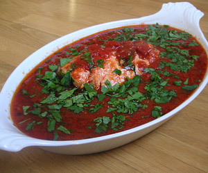

Fisch in Tomatensauce
5 von 6Zwiebeln, Knoblauch und etwas Chilli in etwas Olivenöl andünsten. Ca. 500gr Fischfilet dazugeben und mit ca. 1200gr Pelati und etwas Weisswein bedecken. Nach 20 Min. mit Salz und Pfeffer und Petersiliesilie abschmecken. Dazu Couscous.
